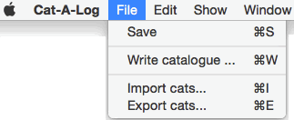

|
The Save menu item saves any updates done to this show.
The Write menu item writes several files.
- A catalogue file in html format. This file can be opened with MS Word.
- A challenges file in xml format. This file can be opened with MS Excel.
- A judges notes file in html format. This file can be opened with MS Word.
The import cats menu imports a .cats file and adds cats to the database.
The export cats menu exports all the cats in the database to a .cats file.
|